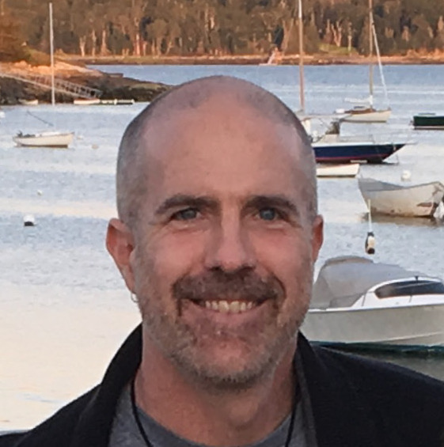
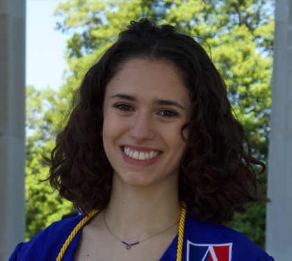
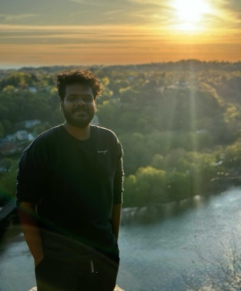
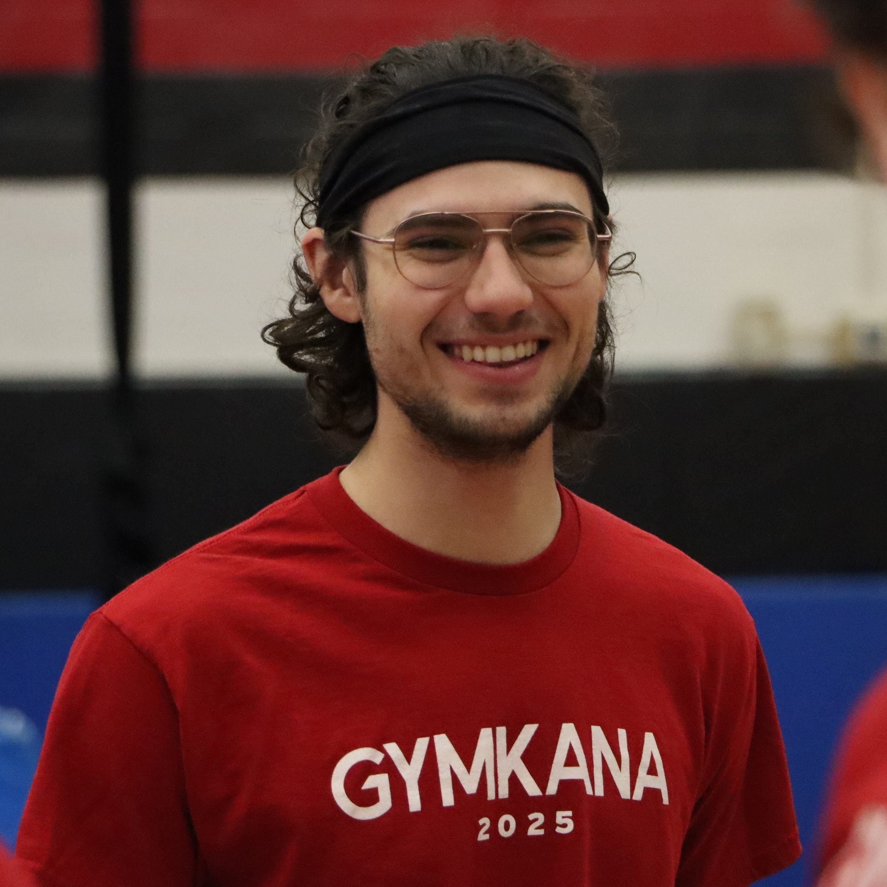
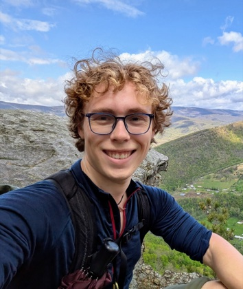

Current members
|
 |
Dan Butts Associate Professor |
 |
Isabel Fernandez AMSC Graduate Student |
|
 |
Vinith Kugathasan ECE Graduate Student |
 |
Matt Panayos Biophysics Graduate Student |
|
 |
Jasper Coles Hood Undergraduate Researcher |
Alumni
- Felix Bartsch: former NACS graduate student (Ph.D. 12/2023): now a postdoc at Princeton University.
- Hadi Vafaii: former Physics graduate student (Ph.D. 12/2023), now a postdoc at UC Berkeley.
- Leya Luo: former postbaccalaureate researcher (2023-2024), now in graduate school at UCLA.
- Jake Yates (former postdoc 2020-2023), now an Assistant Professor at UC Berkeley.
- Ethan Cheng (former undergraduate Honors student, grad 12/2021), now a Neuroscience grad student at Stanford University.
- Matt Whiteway: former AMSC graduate student (Ph.D. 5/2018), now at the Zuckerman Institute, Columbia University
- Oliver Rourke: former AMSC graduate student (Ph.D. 12/2017), now at Google.
- Yuwei Cui: former NACS graduate student (Ph.D. 6/2015), then at Numenta
- James McFarland (former postdoc), then the Director of Data Science at the Broad Institute
- Pranjal Gupta: former undergraduate (grad 2018), now at Duke Neurobiology
- Alexandra Boukhvalova: former undergraduate (grad 2017), now at UMD School of Medicine
- Fang Cao (former undergraduate), awarded Rhodes Scholarship, then at Oxford University
- Daniel Farias (former undergraduate), then at UC Berkeley
- Carl Sabottke (former Masters student), then at LSU Medical School
- Timm Lochmann (former postdoc), then at TU Berlin
- Nadja Schinkel-Bielefeld (former postdoc), then at Fraunhofer Institute for Integrated Circuits
- Lukas Mesik (former undergraduate), then at USC graduate program in Neuroscience